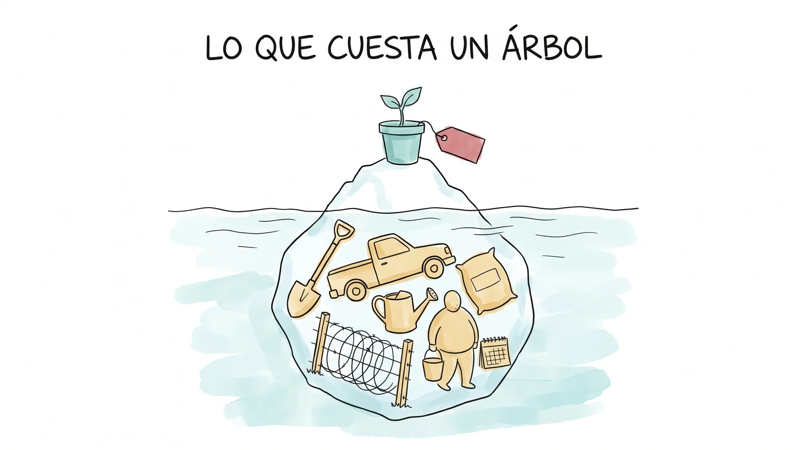
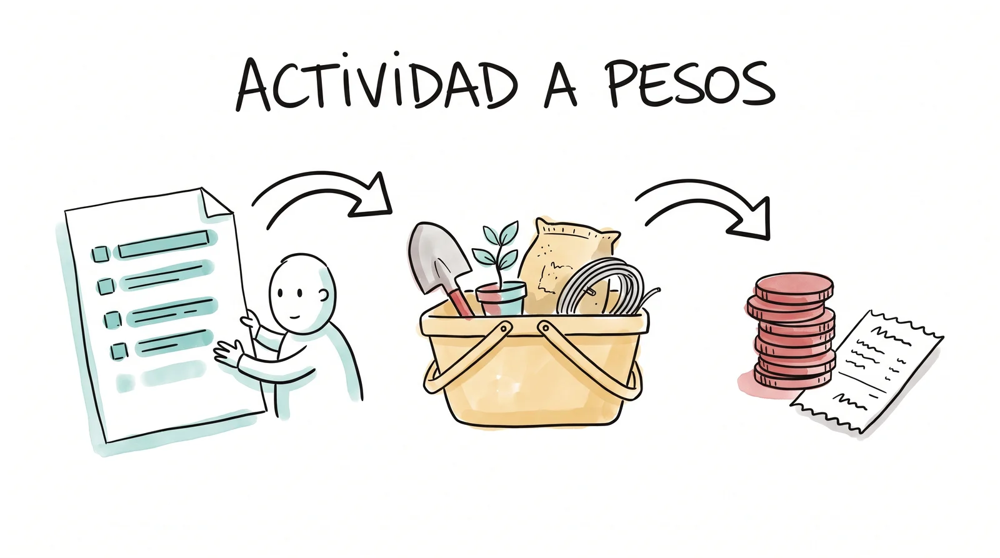
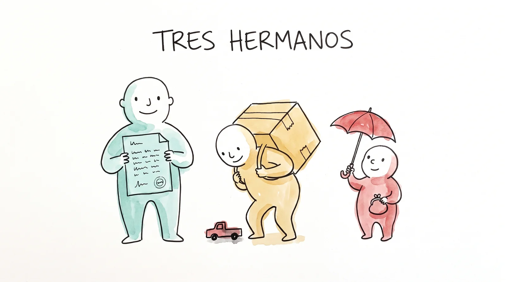
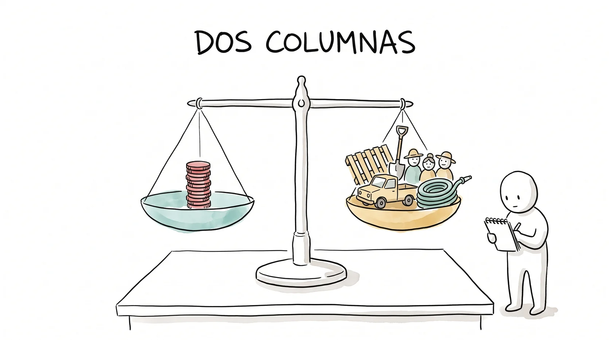
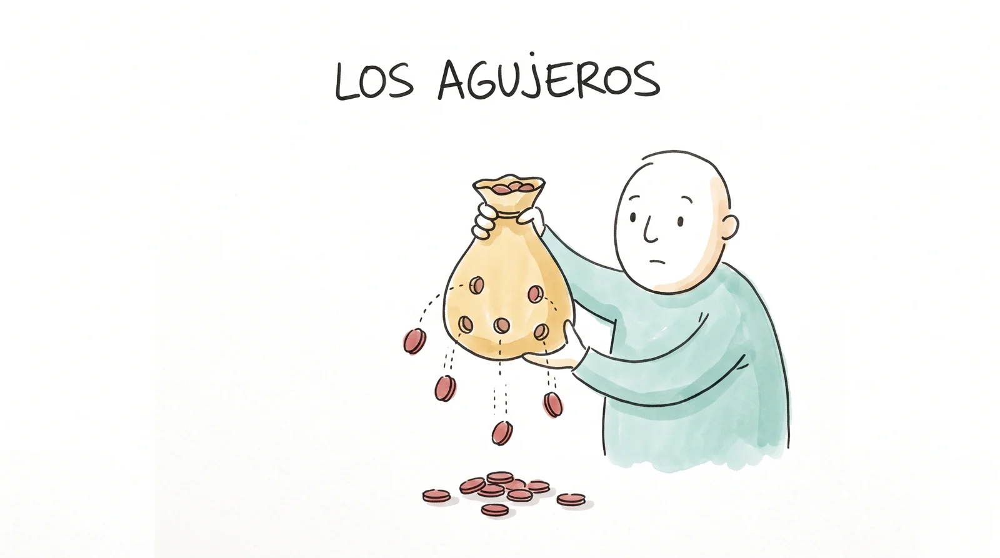

Un mazo de láminas: en clase se proyecta una por una con el botón Presentar (o doble clic sobre cualquier lámina). Las flechas avanzan; la tecla N muestra las notas del conductor. Una idea por lámina; la práctica viene al final.
Tu proyecto en pesos
Qué es un presupuesto, de dónde sale cada renglón, cómo se defiende con papel y por qué en este curso se escribe a dos columnas.
El presupuesto
Tu proyecto en pesos.
Cada equipo con su cronograma de la práctica anterior enfrente, impreso o en la laptop. Sin cronograma no hay presupuesto: se lee de ahí.
¿Cuánto cuesta sembrar un árbol en la orilla de la presa?
Así se contesta: "La planta vale como cuarenta pesos en el vivero. Pero hay que ir por ella, hacerle el hoyo, cercarla del ganado, regarla dos secas y que alguien la cuide. El árbol de cuarenta pesos cuesta como cuatrocientos." Lo caro casi nunca es la cosa: es lo que hay alrededor para que la cosa viva.
Dejar que digan un número. Anotarlos en el pizarrón y regresar a ellos al final de la práctica, cuando tengan el suyo.

Lo que cuesta un árbol.
Qué es
Un presupuesto es tu plan de actividades traducido a dinero.
No es una lista de cosas caras ni un número redondo que suena bien. Cada renglón contesta cinco preguntas: para qué actividad es, qué se compra o se paga, cuántas unidades, a cuánto cada una y quién dio ese precio.

De la actividad a los pesos.
De dónde sale cada renglón
El presupuesto no se inventa en blanco: se lee del cronograma. A cada renglón se le pregunta "¿qué necesito para hacerlo?" y la respuesta se vuelve partidas. Por eso se arman en este orden, y por eso una actividad que no aparece en el presupuesto es una actividad que alguien va a pagar de su bolsa.
Cuatro tipos de recurso
| Tipo | Qué es | En La Florida |
|---|---|---|
| Gente | El trabajo de las personas: jornales, honorarios. | Las ocho personas de la faena, el que opera la motosierra, el técnico del vivero. |
| Traslado | Mover gente y cosas: flete, gasolina, pasajes, viáticos. | La camioneta que trae las plantas y los postes de la cabecera a la orilla. |
| Materiales | Lo que se consume o se queda instalado. | Plantas, alambre, postes, cemento, pintura, costales, botes. |
| Equipo | Lo que queda y se vuelve a usar. | Palas, carretilla, manguera, lámparas solares. |
Los formatos oficiales lo dicen con otras dos palabras: gasto corriente (gente, traslado, materiales: se consume) y gasto de inversión (equipo: queda). Casi todos los fondos ponen tope al segundo.
La partida honesta
La prueba de la partida honesta: se puede leer en voz alta frente a la dictaminadora sin carraspear.

La cotización y sus dos hermanos olvidados.
La cotización y sus dos hermanos
Un precio sin papel es un rumor. Las reglas del Fondo piden tres cotizaciones por cada rubro de mil pesos o más, dos de ellas por escrito y de menos de treinta días. El flete es el renglón que todo primer presupuesto olvida: lo cotizado en la cabecera no llega solo a la orilla. Y los imponderables son el clavo que falta en domingo: un colchón chico, con nombre honesto. Un presupuesto al centavo exacto no es precisión: es optimismo disfrazado de contabilidad.
Tres maneras de estimar
| Manera | Cómo se hace | Cuándo sirve |
|---|---|---|
| De abajo hacia arriba | Sumas el costo de cada actividad del cronograma, partida por partida, con cotización. | La microintervención: se cotiza en la ferretería y el vivero. |
| De arriba hacia abajo | Te dan el techo y recortas hasta que quepa lo que más importa. | La Bolsa de diez mil pesos que se comparte entre cinco equipos. |
| Por referencia | Usas lo que costó algo parecido o lo que un programa paga por unidad. | El proyecto completo de la línea, con los costos unitarios del PROCODES. |
En este curso se usan las tres a la vez: se suma de abajo hacia arriba, se compara contra el techo, y lo que no se puede cotizar se estima por referencia y se marca como estimación.

Dos columnas, y las dos cuentan.
A dos columnas
Las cuatro palabras de la gente que hace lugares con poco dinero: comprado, prestado, trocado o donado. Solo la primera le cuesta al Fondo; las otras tres son gestión, y se cuentan igual de completas porque le enseñan a la dictaminadora el tamaño real del proyecto. Una regla: cada cosa vive en una sola columna. Lo que ya está valorizado como contrapartida no se le cobra al Fondo.
Lo que las reglas del Fondo no perdonan
- Mínimo $2,000 por solicitud. Una Bolsa de $10,000 que se comparte entre los cinco equipos y se reparte por orden de calificación hasta agotarse.
- No paga honorarios del equipo, ni comida que no sea de faena, ni nada sin comprobante.
- El dinero llega por ministración: en partes y en fecha. No se compra antes, y eso manda sobre el cronograma.
- Pedir lo que las reglas no permiten se desecha sin evaluar.
Si el total de una microintervención se acerca a los diez mil completos, es su alarma de incendio: la Bolsa se comparte.
La prueba de Mayra
Cada renglón puede decir en voz alta para qué actividad existe. Y el equipo sabe cuál se cae primero si el dinero llega parcial.
El renglón que no puede explicar para qué está, sobra. Y la dictaminadora siempre pregunta lo mismo: "si les damos la mitad, ¿qué hacen?". El equipo que ya marcó la partida prescindible contesta en tres segundos; el que no, improvisa frente a ella.

Los agujeros del presupuesto.
Los seis agujeros clásicos
| El agujero | Cómo se ve |
|---|---|
| El precio de oídas | Sin cotización que lo respalde. |
| La partida bolsa | Un renglón gordo que no dice para qué actividad es. |
| El flete olvidado | El material cotizado en la cabecera, y nadie lo trae. |
| El presupuesto al centavo | Sin imponderables. |
| El doble papel | Cobrarle al Fondo lo que ya está valorizado como contrapartida. |
| El pecado mayor | Pedir lo que las reglas no permiten, o más de lo que existe. |
Si hay tiempo, proyectar el gimnasio "El presupuesto agujerado" (ejercicios/semana-10): siete partidas del manantial, una por agujero.
A quién le compras también es un mensaje
La malla de la ferretería del pueblo y el jornal de la gente de La Florida valen más que su precio.
Es la pregunta que el manual de Acción sin Daño hace sobre el uso de los recursos: ¿qué efectos causa en el lugar la forma de gastar? A quién se le compra, a quién se contrata y quién se queda fuera lo lee la comunidad antes que la dictaminadora. Cuando dos cotizaciones empatan, gana la del pueblo; cuando no empatan, se dice por qué se eligió la otra.
Así se ve uno hecho: la sombra del manantial
| Partida (actividad) | Papel | Paga el Fondo | Afuera |
|---|---|---|---|
| Malla sombra de 6 por 4 m, 1 pieza (faena 2) | Ferretería del pueblo, 2 nov | $2,850 | |
| Postes de madera de 2.2 m, 10 piezas a $190 (faena 1) | Maderería de la cabecera, 2 nov | $1,900 | |
| Cemento gris, 2 bultos a $340 (faena 1) | Ferretería del pueblo, 2 nov | $680 | |
| Flete de la cabecera al manantial, 1 viaje | Nota del fletero, 3 nov | $400 | |
| Imponderables, 5%: el clavo que falta en domingo | $292 | ||
| Doce tarimas de la bodega, trocadas por barrer el rincón (faena 2) | Nota firmada y foto | $1,200 | |
| Dos jornadas de faena, ocho personas: 16 jornales a $300 (faenas 1 y 2) | Jornal de la región, lista de asistencia | $4,800 | |
| Totales | $6,122 | $6,000 |
Cada partida dice para qué faena es y de dónde salió el precio; el flete y los imponderables tienen renglón propio; lo trocado y lo donado viven en la otra columna y le enseñan a la dictaminadora que el proyecto vale el doble de lo que pide. Lo que se cae primero si la Bolsa llega parcial: los postes nuevos, que se cambian por troncos con permiso. En la práctica este ejemplo se carga con un botón.
El presupuesto de tu componente de La Florida, partida por partida y a dos columnas.
Abran la práctica del presupuesto en la misma laptop del equipo: las actividades de su cronograma ya están ahí. A cada actividad se le cuelgan sus partidas con unidad, cantidad, precio y papel; la herramienta suma las dos columnas, agrega flete e imponderables, compara contra la Bolsa y señala los agujeros. Trae una lista de precios de referencia, pero son de oídas: cada uno se cambia por la cotización del equipo. Al terminar, descargar y guardar en el Drive.
Abrir la práctica ▸Rondar con la lista de agujeros. Pedir a cada equipo que marque la partida que se cae primero. Los criterios del reto 4: cada partida con su papel; flete e imponderables con renglón propio; lo de afuera en la columna de contrapartida y no en el gasto; total dentro de lo que las reglas permiten; y la suma que cuadra dos veces.